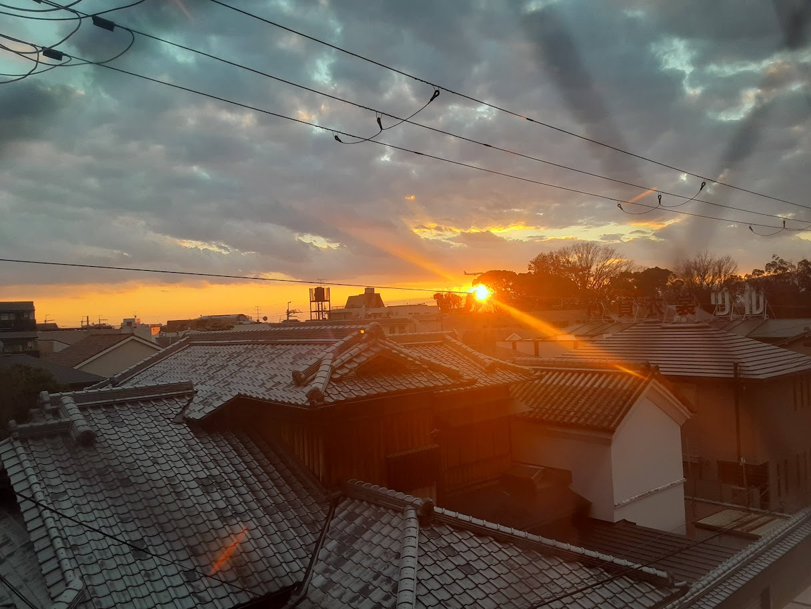
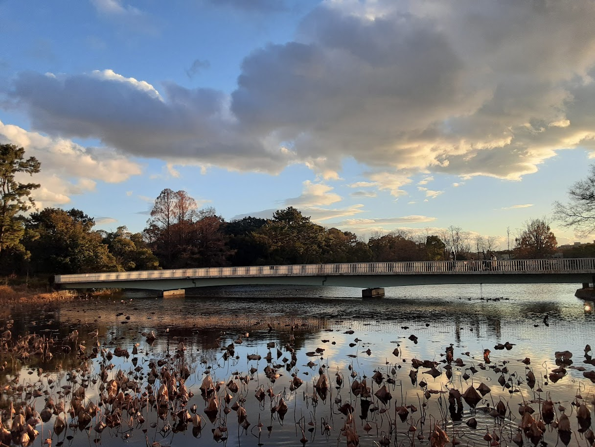

Okamachi
Osaka
Okamachi is a highly populated city north of Osaka. There are tons of tall buildings, trains, and people. The part of this town that I fell in love with is actually the food. Every food stall always had a guaranteed amazing dish. They also had unique restaurants serving amazing variations of popular dishes. If you know okonomiyaki (cabbage pancake), they had a restaurant that replaced the cabbage with green onion. That restaurant always had a line out the door every night!
 